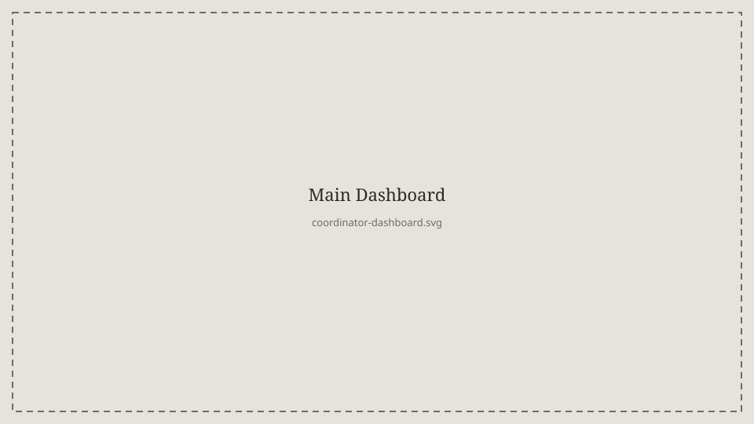
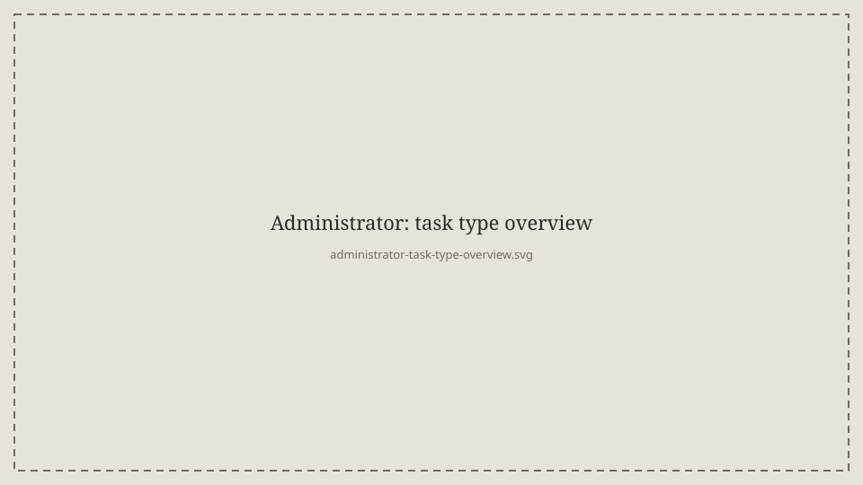
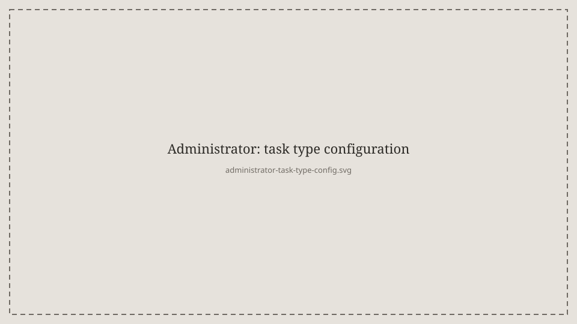
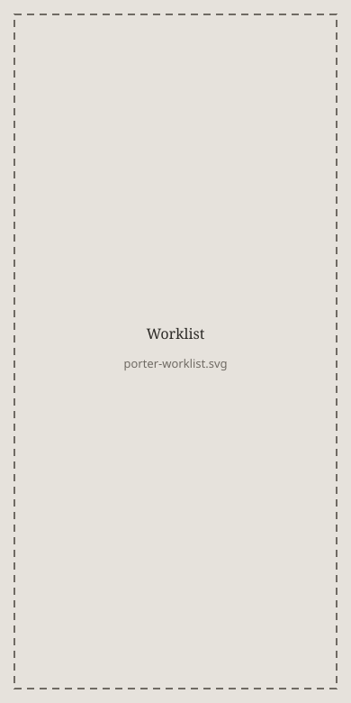
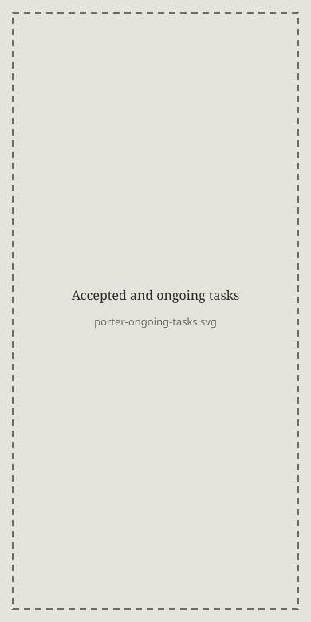
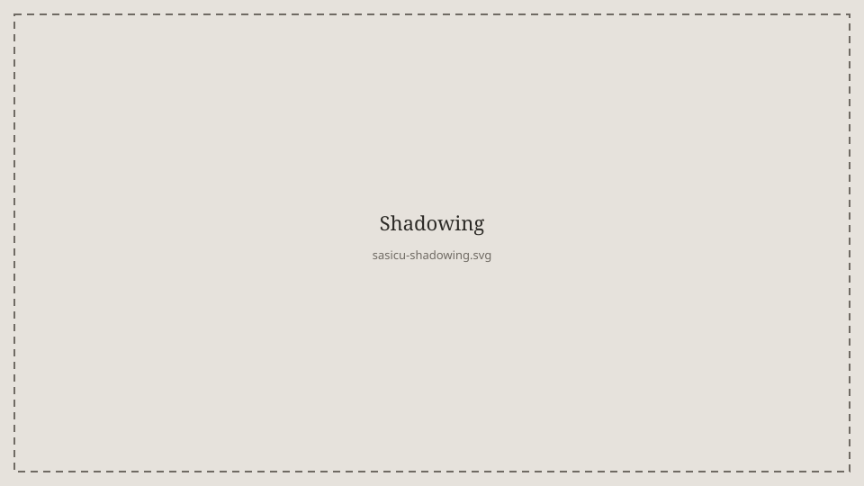
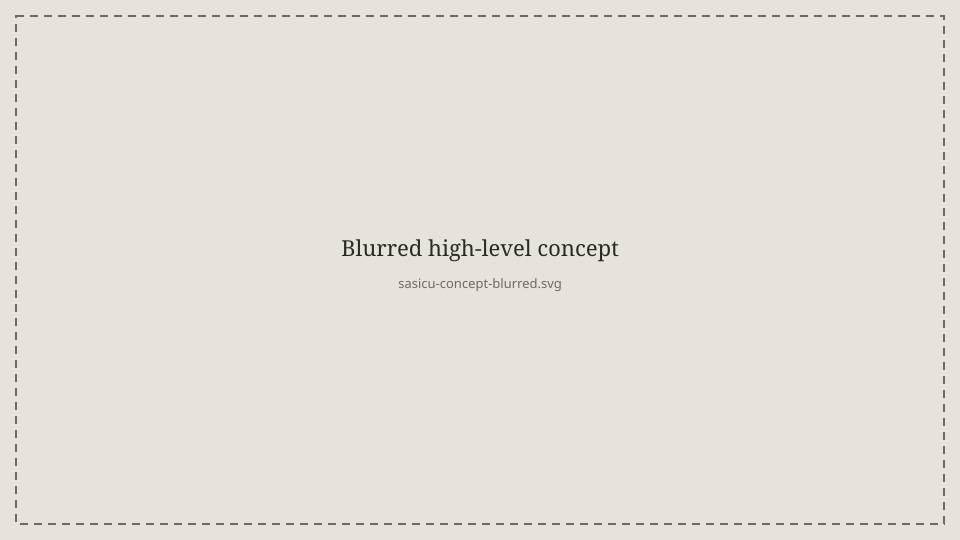
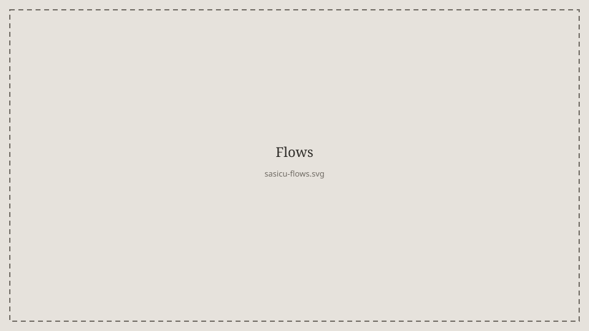

I work as a UX designer at Ascom. Ascom develops communication solutions so that critical information reaches the right person at the right time. I get to work with the whole design process, from early concepts and user tests to summative evaluations.
A project I have driven throughout my employment is the hospital transport system, with a desktop for coordinators on eight-hour shifts as well as a mobile app for porters who carry out the tasks. For critical alarm handling I have worked with formative and summative evaluations in the medical-device process. I have not worked with the design for that product. On SASICU I was the main UX person. That work is still open.
Husqvarna Fleet is a web tool and a mobile app for professional users of connected machines. The work has a strong focus on overview of status, overdue work, and people in the field.
Coordinator desktop
In larger hospitals the coordinators sit at a desktop during eight-hour shifts. They need a good overview of different types of transports, current transports as well as future ones. They read the tasks in a dashboard, with a focus on time, criticality, and overdue statuses.

This is where the coordinator mainly works. They also have control over each porter's workload, breaks, and shifts.
I was lead designer for the coordinator desktop. I took over the project after an initial pre-study and continued the concept through wireframes, early prototypes, and iterative user tests with coordinators. I designed the main structure of the coordination workflow and created the UI elements of the desktop. From those tests I wrote user stories for the needs that came up, and formulated upcoming features. Throughout the project I have produced design material and specifications for the development teams, as well as formulated the product vision and direction in close dialogue with customer organizations. I have worked with the product continuously during my five years at the company.
Administrators configure the different task types.


The coordinators then see those types in the dashboard.
The work has had a strong focus on reducing wrong orders, shortening waiting times, and avoiding breaks in the care process.
Porter mobile
The porters carry out the transport tasks in a mobile app, on iOS as well as Android. Depending on the hospital there are two different ways of working. Either the team picks from a shared worklist, or the porter receives what the coordinator has set as the priority, mostly one or two transports in a row.

This is the worklist. The team receives the tasks collectively and the porters pick from that list. It has to be clear for the porter when they receive an acute transport. Sound, vibration, and visuals help them prioritize the transportation tasks in the list.
I owned the porter mobile in the same way as the coordinator desktop. I worked on the workflows for when teams pick from a worklist, as well as the workflow where the coordinator decides the priority.

When a porter has accepted a task, this is the page for accepted and ongoing work.
The work has had a strong focus on supporting both ways of working, depending on the hospital.
SASICU
SASICU is an EU project with the aim of making alarm handling in intensive care more efficient. I was the main UX person. I worked with clarifying how the care staff work.
I conducted, among other things, interviews and a shadowing study in three hospitals, two in the Netherlands and one in Sweden, on neonatal and intensive care wards.

A lot of focus was on risk, as well as an initial concept for handling different alarm levels.


I worked on the insights. They were presented both internally and to a research team in the Netherlands. That work is still open.